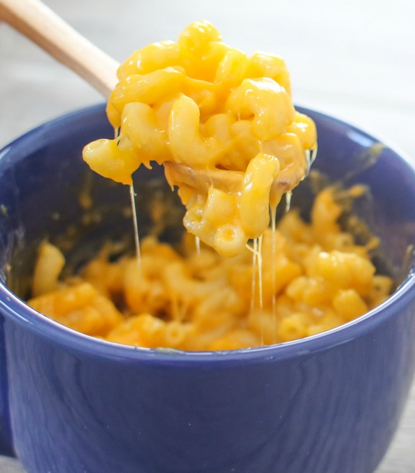

Mac 'N' Cheese

Description:
The Microwave 5-Minute Mac N Cheese is a classic comfort food that can be made in just 5 minutes.
This cheesy and creamy macaroni and cheese is perfect for a quick and easy lunch or dinner.
Ingredients(per 1 serving):
- 1/2 cup elbow macaroni(50g)
- 1/2 cup water(120 mL)
- 3 tablespoons milk
- salt, to taste
- pepper, to taste
- 1/4 cup shredded cheddar cheese
- fresh chive to garnish, optional
Preparations:
- Mix the macaroni, water, and salt in a microwaveable mug.
- Microwave for 2-3 minutes, then stir.
- Add the milk, cheese, salt, and pepper, then stir.
- Microwave for another 30 seconds, stir, and garnish with a sprinkle of chives.
- Enjoy!